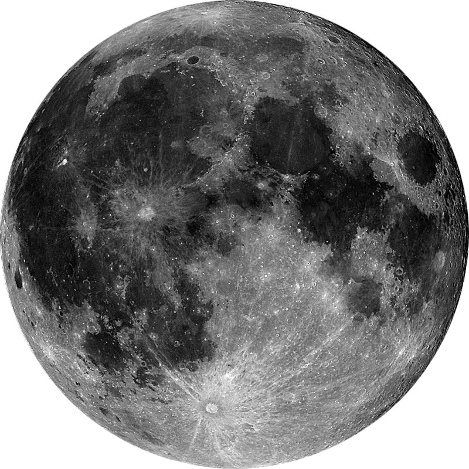
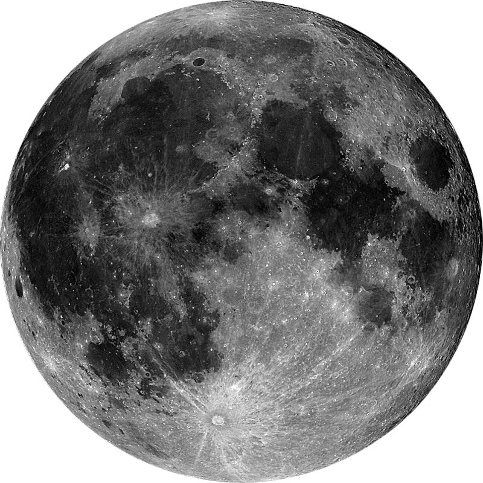

Sun
Sun
The Sun is the star at the center of the Solar System.
It is a nearly perfect sphere of hot plasma, with internal convective motion that generates a magnetic field via a dynamo process.
57`910`006 km

Mercury
Mercury
Mercury is the smallest and innermost planet in the Solar System.
Its orbital period around the Sun of 87.97 days is the shortest of all the planets in the Solar System.
It is named after the Roman deity Mercury, the messenger of the gods
50`289`989 km

Venus
Venus
It has the longest rotation period (243 days) of any planet in the Solar System and rotates in the opposite direction to most other planets
It does not have any natural satellites. It is named after the Roman goddess of love and beauty.
99`309`962 km
 

Earth
Moon
Earth
Earth is the third planet from the Sun and the only astronomical object known to harbor life.
According to radiometric dating and other sources of evidence, Earth formed over 4.5 billion years ago.
Earth's gravity interacts with other objects in space, especially the Sun and the Moon, Earth's only natural satellite.
Earth revolves around the Sun in 365.26 days, a period known as an Earth year.
During this time, Earth rotates about its axis about 366.26 times.
128`629`958 km

Mars
Mars
Mars is the fourth planet from the Sun and the second-smallest planet in the Solar System after Mercury. In English, Mars carries a name of the Roman god of war, and is often referred to as the "Red Planet" because the reddish iron oxide prevalent on its surface gives it a reddish appearance that is distinctive among the astronomical bodies visible to the naked eye.
Mars is a terrestrial planet with a thin atmosphere, having surface features reminiscent both of the impact craters of the Moon and the valleys, deserts, and polar ice caps of Earth.
128`629`958 km
Asteroids

Jupiter
Jupiter
Jupiter is the fifth planet from the Sun and the largest in the Solar System.
It is a giant planet with a mass one-thousandth that of the Sun, but two-and-a-half times that of all the other planets in the Solar System combined. Jupiter and Saturn are gas giants; the other two giant planets, Uranus and Neptune, are ice giants. Jupiter has been known to astronomers since antiquity.
It is named after the Roman god Jupiter.
591`889`471 km

Saturn
Saturn
Saturn is the sixth planet from the Sun and the second-largest in the Solar System, after Jupiter.
It is a gas giant with an average radius about nine times that of Earth.
It has only one-eighth the average density of Earth, but with its larger volume Saturn is over 95 times more massive.
Saturn is named after the Roman god of agriculture; its astronomical symbol (♄) represents the god's sickle.
2`091`289`499 km
Uranus
Uranus
Uranus (from the Latin name "Ūranus" for the Greek god Οὐρανός) is the seventh planet from the Sun.
It has the third-largest planetary radius and fourth-largest planetary mass in the Solar System.
Uranus is similar in composition to Neptune, and both have bulk chemical compositions which differ from that of the larger gas giants Jupiter and Saturn.
For this reason, scientists often classify Uranus and Neptune as "ice giants" to distinguish them from the gas giants.
2`413`010`080 km

Neptune
Neptune
Neptune is the eighth and farthest known planet from the Sun in the Solar System.
In the Solar System, it is the fourth-largest planet by diameter, the third-most-massive planet, and the densest giant planet.
Neptune is 17 times the mass of Earth, slightly more massive than its near-twin Uranus.
Neptune is denser and physically smaller than Uranus because its greater mass causes more gravitational compression of its atmosphere.
Zoom
Show names
Show stars